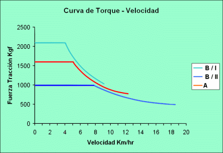

|
INFORME TÉCNICO TECFOR Nº 10 |
|
Capacidad de ascenso del TECFOR
Es sabido que existe la necesidad de identificar un equipo adecuado para utilizar en raleos en terrenos de topografía
intermedia (pendientes entre 15 y 30%), que pueden sustituir los bueyes y skidders. A juicio de muchos, estos últimos
significan una inversión demasiado elevada para ser usados en estas faenas. Varios han sido los intentos
fallidos por encontrar estos equipos adecuados, concentrándose la búsqueda en los llamados miniskidders.
Actualmente se utilizan trineumáticos TECFOR para estos fines, lo que nos llevó a abordar el tema
desde un punto de vista técnico. A continuación se presenta un resumen de dicho análisis.
La capacidad de ascenso de cualquier equipo, medida en porcentaje o grados de la pendiente, depende básicamente
de las condiciones de terreno, el agarre de sus neumáticos, la fuerza de tracción de las ruedas tractoras,
el número de éstas, el peso y la estabilidad de cada equipo.
Básicamente el estudio consistió en evaluar como mejora la capacidad de ascenso del TECFOR al incorporarle
motores hidráulicos más potentes, es decir de mayor torque, y neumáticos de mayor aro, en
distintas condiciones de terreno y analizar el resbalamiento o patinaje del equipo. Finalmente se compararon los
resultados obtenidos con las pendientes críticas a las cuales el TECFOR, por su inestabilidad intrínseca
derivada de su concepción de tres ruedas, se vuelca.
1.- CURVAS DE TORQUE - VELOCIDAD: Antes de evaluar la capacidad de ascenso del equipo con diferentes motores hidráulicos,
es importante mostrar gráficamente las curvas de torque (ajustado por el radio de los neumáticos)
y velocidad, para los motores hidraúlicos actuales con neumáticos 18.4 x 26 (curva A) y motores hidráulicos
con 50% mayor cilindrada con neumáticos 23.1 x 26 (curva B). En este último caso se muestran dos
curvas, una para la marcha I (mayor torque y menor velocidad) y otra para la marcha II (menor torque y mayor velocidad),
que es un opcional para el motor alternativo. La marcha I sería adecuada para faenas de madereo, clasificación,
ordenamiento y carguío en cancha, en cambio la marcha II es sólo para traslados del equipo.

Las principales conclusiones son:
- El motor B/I tiene un torque "ajustado" de 37% mayor que el motor A para velocidades hasta 4 Km./hr,
sin embargo desarrolla una velocidad máxima de 9,3 Km./hr, 38% menor que el A.
- El motor B/II tiene un torque ajustado de 37% menor que el A y 50% menor que B/I en velocidades de hasta 4 Km./hr,
pero a cambio desarrolla una velocidad máxima de 18,5 Km./hr, que resulta ser 42% superior al motor A.
Esto nos induce a pensar que el motor B con dos marchas, nos permitirá ascender mayores pendientes. Este
es un hecho indiscutible; sin embargo a nuestro parecer lo importante es evaluar el costo-beneficio de incorporar
ese motor de mayor potencia.
Para ello analizaremos, por una parte como se compara la capacidad de ascenso en distintos tipos de terreno y su
resbalamiento o patinaje. Con los resultados obtenidos, cabe preguntarse si las pendientes en las faenas forestales
superan los valores máximos obtenidos, en que proporción, y por otra parte si la probabilidad de
volcamiento es una limitación más restrictiva que la de potencia de los motores hidráulicos.
2.- CONDICIONES DE TERRENO: Lo primero que se hizo fue analizar
la capacidad de ascenso, para distintos tipos de terreno. Empresas especializadas en este tema definen estos terrenos,
describiéndoles con un factor que va desde 0,2 para arena suelta (lo más difícil de ascender)
hasta 0,04 para terreno normal cultivable (lo más fácil para escalar, salvo el asfalto, que no se
considera pues no es relevante para faenas forestales).
Los resultados obtenidos fueron:
|
Pendientes máximas de ascenso |
|||||||
|
Terreno |
Motor A |
Motor B |
|||||
|
Arena suelta: |
con carga |
14,5° |
(25,8 %) |
22° |
(40,5 %) |
||
|
sin carga |
40° |
(83,9 %) |
67° |
(236,0 %) |
|||
|
Terreno normal: |
con carga |
24° |
(45,0 %) |
32° |
( 63,0 %) |
||
|
sin carga |
59° |
(166,0 %) |
----- |
----- |
|||
Nota: El
cálculo considera que la carga va despejada del suelo.
Ello significa que en el peor de los casos, es decir en arena suelta, el TECFOR cargado con 2.200 Kg, con los motores
hidráulicos actuales puede escalar teóricamente pendientes de 25,8% . Si ello no ocurre así
es por problemas de agarre de los neumáticos, principalmente relacionados con las calugas y el contenido
de agua de los mismos. Al respecto es importante destacar que para el mismo equipo, salvo con motores hidráulicos
distintos, en ambos casos el equipo patinará en la misma pendiente. A continuación se presenta el
análisis del resbalamiento.
3.- RESBALAMIENTO O PATINAJE: Hasta ahora el estudio se ha hecho suponiendo que toda la fuerza de tracción se
transmite al suelo sin patinar, pero en la realidad puede ser que esta fuerza sea mayor que la que resiste la combinación
terreno-neumáticos.
Basándose en las tablas de Mannesmann-Rexroth y considerando neumáticos agrícolas ( que para
efectos de tracción son iguales que los forestales) se consideran nuevamente las mismas condiciones:
| Terreno | Pendiente a la que patinan las ruedas | |||
| Arena suelta | 8 ° | ( 14,1%) | ||
| Normal cultivable | 54° | (138,0%) | ||
Las principales
conclusiones son:
a) Para arena suelta,
la limitante es el agarre del neumático con el terreno, ya que, con ambos motores, el equipo patina con
pendientes menores que las que puede subir según la potencia de sus motores hidráulicos.
b) Para terreno normal, sin carga, la limitante es el agarre
del neumático con el terreno, dado que con ambos motores, el equipo patina con pendientes menores que las
que puede subir según su fuerza de tracción.
c) Para terreno normal y el equipo cargado, la limitante
es la capacidad de ascenso que en el motor B alcanza los 32° y en el motor A los 24°, y no el resbalamiento o falta de agarre de los neumáticos.
El problemas del patinaje se puede resolver con cadenas, orugas, tracción múltiple, entre otras.
4.- ESTABILIDAD INTRINSECA DEL EQUIPO: La concepción
de tres ruedas del equipo presenta indudables beneficios por su gran movilidad. Sin embargo presenta limitaciones
en faenas con pendientes por la probabilidad del volcamiento del mismo.
El análisis que se hizo fue determinar el centro de gravedad del equipo con distinta carga y la garra a
distintas alturas del piso, y luego determinar las pendientes a las cuales la unidad se vuelca en movimiento con
velocidad constante, en distintas direcciones en relación a la pendiente.
Es importante destacar que el equipo no presenta problemas de estabilidad cuando sube o baja, moviéndose
hacia delante o atrás enfrentando la pendiente. El riesgo de volcamiento se presenta cuando se desplaza
en cualquier otro ángulo, siendo el movimiento a lo largo de la pendiente el de mayor riesgo. Se determinó
que el equipo cargado al máximo, es decir 2.200 kgs, se vuelca a los 28% de pendiente. Con un margen mínimo
de seguridad, la recomendación es no usar equipos trineumáticos, aún con un ancho máximo
de 2,8 m, en pendientes mayores a 25%, independientemente de la potencia de sus motores hidráulicos.
Recuerde....... Tecfor es Tecnología Forestal